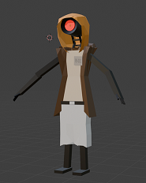
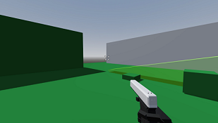
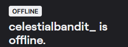

 
Game
I'm working on a game! It's a looter-shooter of sorts where you play as a mysterious little robot on his quest towards finding his inner peace, so deep I know :O. Progress is slow, but steady -w- if I stop being a lazy ahh I'll upload some screenshots soon!This website lol
This website was originally made purely out of boredom because Bowl showed me what they were up to, the aesthetic was really inspiring and so I decided to do what is considered a completely hideous design, but I like it so that's what matters. -w-
Streaming
Daily life of a small Twitxh streamer, I wake up early at 6pm, but I'm SUPER exhausted so I take a sip of some GFoul, I was too tired so I went to sleep again... *amimimi*.On real note as much as I like streaming, having split personality disorder makes it really easy to talk to myself, I simply don't have time, the mood, the internet, or a game to stream regularly, so I'm just eepin. -w- Still, feel free to check my stuff out tho, the links are in the Socials section!